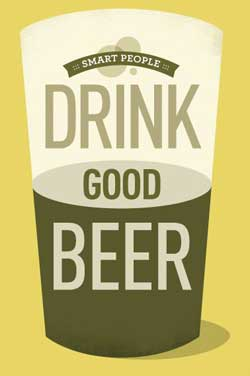

Top Five Reasons to Drink Craft Beer
1) Craft Beer Tastes Better. The number one reason why you should drink craft beer is because craft beer tastes much better than the “beer water” that is mass-produced and mass marketed by the big beer companies. Craft beer tastes much better because craft brewers spend their time focusing on the quality of their beer rather than focusing on their marketing campaigns and stock prices. Craft brewers put their heart and soul, as well as lots of amazing ingredients, into every beer they brew and don’t cut any corners. The big beer companies, on the other hand, take ingredients out of their beer in order to make their beer as “watery” as possible. Why would anyone want to drink beer that is purposely being watered down by leaving out important ingredients? Choose taste. Choose craft beer!
2) More Alcohol. Craft beers come in many shapes and sizes, but one thing remains the same; they all pack a punch! Most craft beers range from 5-10% ABV (alcohol by volume), but some craft beers can reach 20%, 30%, and even 40% ABV! Compare this to the 2.5% ABV in Budweiser Select 55 and Miller Genuine Draft Light 64 that the big beer companies mass produce and you will see that there is a big difference. The big beer companies are selling you “beer water.”
3) Health Benefits. You read that right, craft beer has health benefits. Research has shown that craft beer even has more health benefits than red wine! Craft beer contains more nutrients than wine. Craft beer also contains some soluble fiber, some B vitamins (notably folate), a range of antioxidants, and it is also the richest source of silicon; silicon in the diet may help in countering osteoporosis. It has been shown that the antioxidant ferulic acid is taken up from beer into the body.
4) More Choice. There are almost 1,600 craft breweries throughout the United States brewing thousands of delicious, flavorful craft beers. And they aren’t making the same old beers, either. Every single craft brewery makes its beer in its own special way with its own special ingredients. Did you know that you probably live within 10 miles of a craft brewery?
5) Meet The People Making The Beer. One of the coolest benefits of drinking craft beer is that you can visit a local craft brewery where your favorite craft beer is made and actually meet the people that make the beer. People that make craft beer, whether they are home brewers or brew masters, are some of the nicest, funniest people you will ever meet. So find a craft brewery in your backyard and start hanging out with your local craft brewers! Most craft breweries offer daily brewery tours during which you get to sample all of their beers.